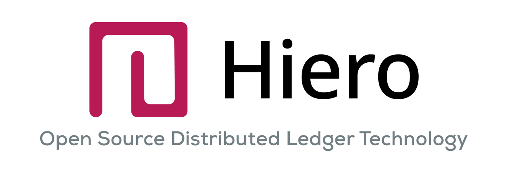

HIP stands for “Hiero Improvement Proposal.” These proposals can range from core protocol changes to applications, frameworks, or protocols built on top of Hiero’s open-source ledger code. The HIP author is responsible for building consensus within the community, documenting dissenting opinions, and tracking their HIP through the process outlined below.
The hashgraph consensus algorithm was created by Dr. Leemon Baird. Originally, Hedera was a public network built on top of this algorithm; later, Hedera donated its codebase to the open-source Linux Foundation project now known as Hiero. You can learn more by reading the hashgraph algorithm whitepaper.
The goal of HIPs is to have a transparent, collaborative place to propose new features, collect community input on a particular issue, and document proposals and reasoning in one place. Publishing these proposals on GitHub means every revision is recorded in version history.
See HIP-1 for details on the current HIP process.
Each HIP should outline a single key proposal or idea, kept focused to a single subject for clarity. A HIP must meet certain minimum criteria: it must be clearly written, describe the proposed enhancement completely, represent a net improvement, and (if applicable) include a solid reference implementation that does not unduly complicate the network.
There are three kinds of HIP:
Evaluate your idea: consider why you’d like to request changes or improvements and how it benefits the broader Hiero community.
Check existing proposals to ensure there are no duplicates.
Discuss the idea with the Hiero community (for example, on Hedera’s Discord or LFDT's Discord) to confirm whether it’s original or if it’s been addressed before.
Reevaluate your proposal to make sure it is generally applicable and not limited to a single project or narrow use case.
An excellent place to discuss your proposal and get feedback is in the issues section of this repository or on Hiero’s Discord server. There, you can gather community input and refine the language around your HIP to ensure broad support.